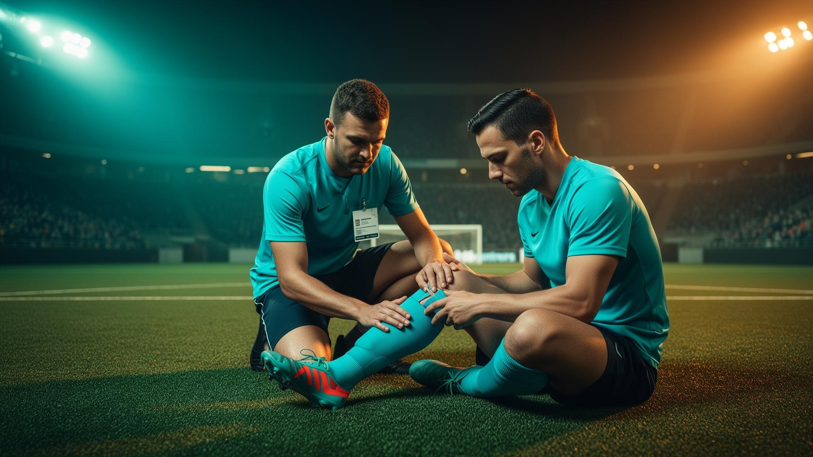
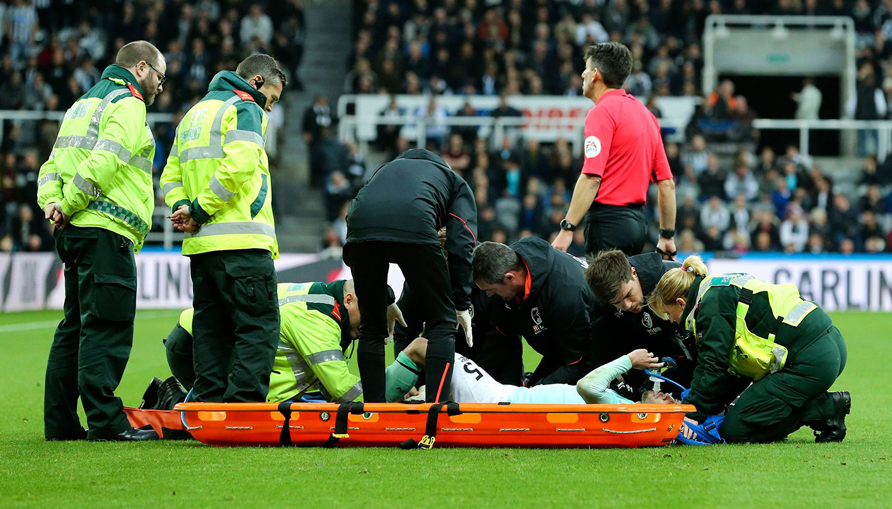
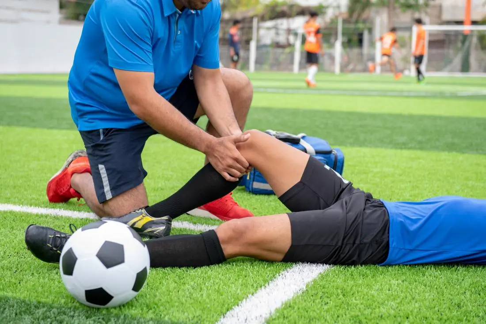

نظام متكامل لتسجيل ومتابعة الإصابات الرياضية، وإدارة برامج التأهيل والعودة للملاعب بكفاءة عالية، مع دعم أفضل لاتخاذ القرار الطبي ومتابعة حالة اللاعبين خطوة بخطوة.

متابعة مستمرة
إصابة مسجلة
برنامج تأهيل
طاقم طبي ومدربين


نوفر نظامًا ذكيًا يساعد الفرق الرياضية والأطقم الطبية على تسجيل الإصابات، متابعة تطور الحالة، إدارة خطط التأهيل، ودعم قرار العودة للملاعب بشكل أكثر دقة وسرعة وكفاءة.
نوفر مجموعة متكاملة من الأدوات والخدمات التي تساعد على تسجيل الإصابات، متابعة حالة اللاعبين، إدارة التأهيل، ودعم القرار الطبي والرياضي بكفاءة.
تسجيل بيانات الإصابة وربطها باللاعب والفريق مع حفظ كل التفاصيل الطبية والزمنية بشكل منظم.
اقرأ المزيدإعداد خطط تأهيل مخصصة حسب نوع الإصابة ومتابعة تقدم اللاعب حتى الوصول للجاهزية الكاملة.
اقرأ المزيدإنشاء تقارير واضحة عن حالة اللاعب، مراحل العلاج، ومستوى التحسن لدعم اتخاذ القرار المناسب.
اقرأ المزيدمراقبة حالة كل لاعب بشكل مستمر مع سجل زمني يوضح آخر الفحوصات والتحديثات الطبية.
اقرأ المزيدتحليل بيانات التأهيل والتعافي لتحديد مدى جاهزية اللاعب للعودة إلى التدريب أو المباريات.
اقرأ المزيدإرسال تنبيهات فورية بمواعيد الجلسات، التقييمات، أو أي تحديثات مهمة تخص إصابات اللاعبين.
اقرأ المزيد